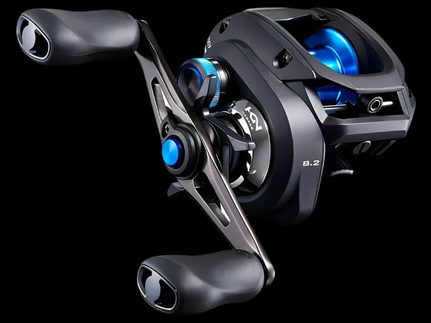

My Favorite Fishing Reel
Ordered List of my Favorite Reels along with an Unordered List of my Favorite Brands!
Favorite Reels
- Shimano SLX DC casting reel
- Penn Fathom Baitcast Reel
- Daiwa Coastal 80
Best Brands
- Shimano
- Penn
- Daiwa
Learn more about SLX and some of the top fishing reels here .